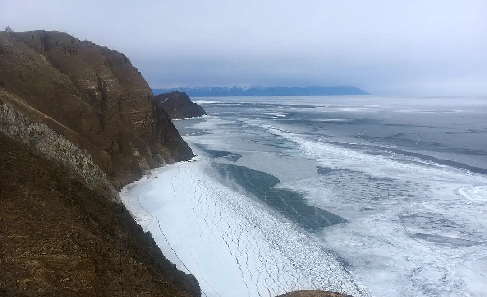

|
|
《传奇》、《风吹麦浪》、《贝加尔湖畔》、《一往情深的恋人》、《向往》、《车站》、《美若黎明》、《异乡人》、《月光》、《父亲》
 到达奥利洪岛上的胡日尔镇，稍加整顿，我们朝着西边走去。胡日尔镇房屋零散分布，穿过一片陡然下降的松林坡地后，终于来到湖畔。寒风呼呼作响，水鸟起起落落。东边的湖面冰封百里，遥远处是连绵的雪山，湖水和沙滩交界处浪潮成冰。上扬的浪花保持着液体的姿态，如同古希腊神庙的雕塑，永恒却又易于毁灭。我久久地凝视它们，视线也开始模糊。关于贝加尔湖，关于西伯利亚，有几个画面在脑中时时回荡，正是这些画面让我认定这里和伊犁平原、和青藏高原等等有本质的区别。万物都是静默的，但好像又能听见天空中那只雄鹰振翅的气流声。
|
|---|